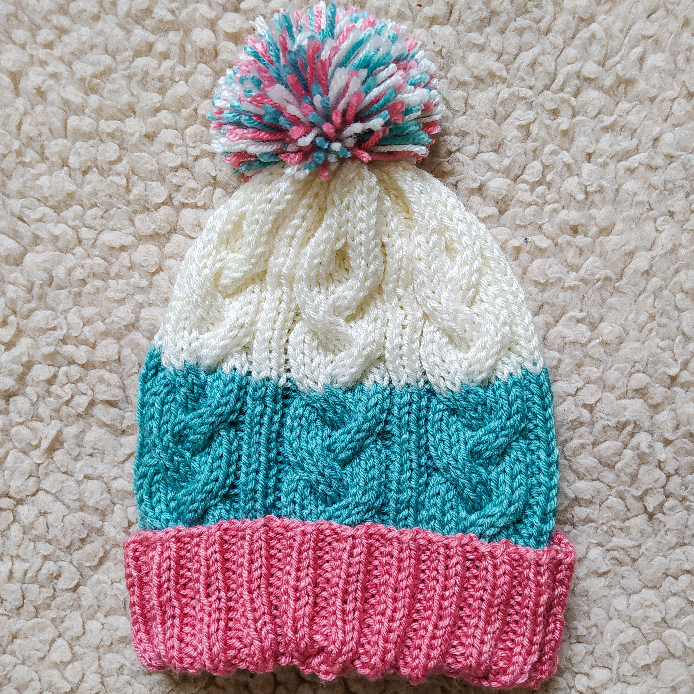
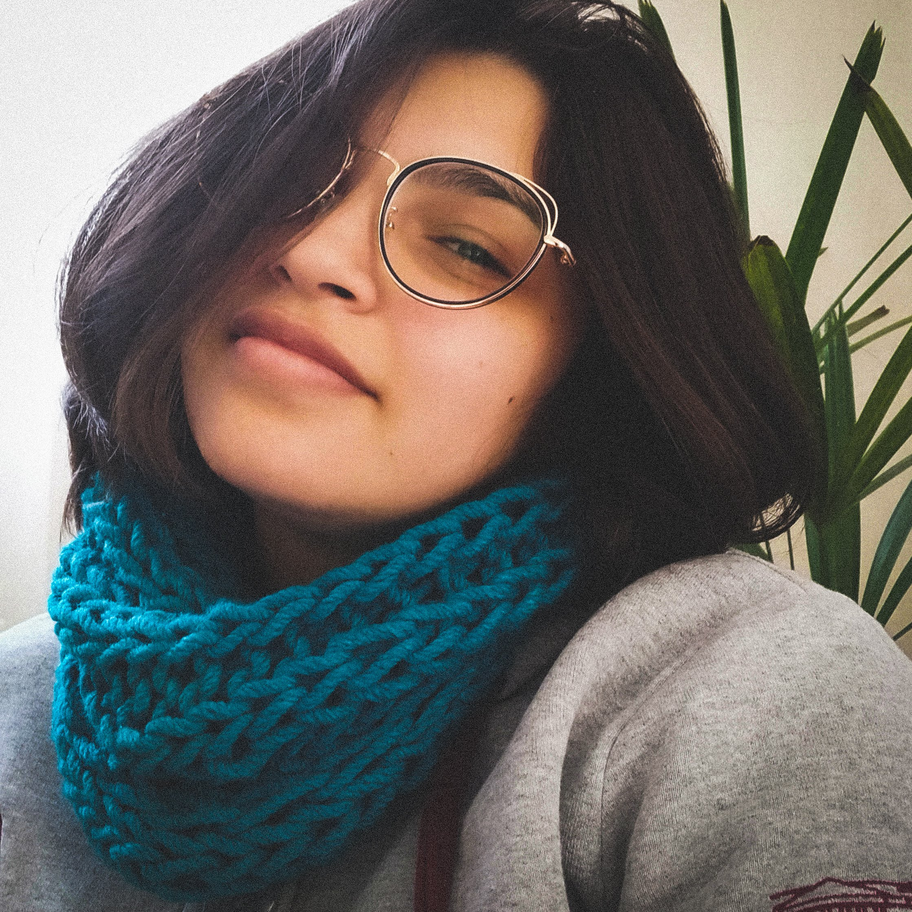
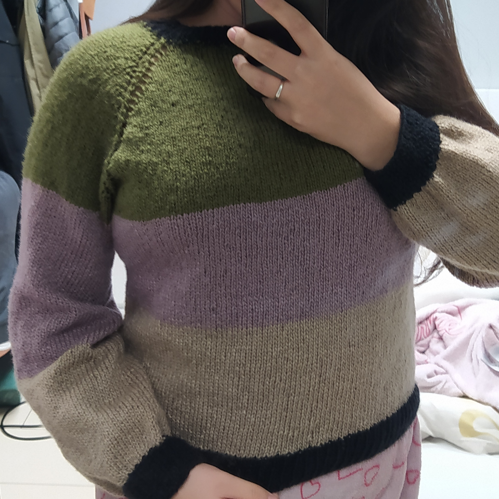

KNITTING
I learned how to knit during the fist months of lockdown due the COVID-19 pandemic, and this was something very important for me to keep going during that difficult time. Since then, I've never stopped learning; knitting is hard and takes a long time, and there are so much techniques that you could spend a whole life learning, which I think is awesome.
My favorite projects are the ones that have a lot of different stitches, because they make the work very dynamic. Since some pieces can take weeks or even months to be done, it's important for me to have a dynamic pattern, otherwise I get bored.
Here are the top 3 favorite projects I've made:
-
Candy Beanie
This was a gift for my niece, and it was a fun project because it was the first time I worked with a circular needle instead of two flat needles.
-
Ocean Scarf
I love giving knitted gits, and this scarf was a present for my sister. It was knitted with two needles with different sizes each, which is a unusual technic.
-
Autumn Jumper
This was by far the biggest project I've made, and it took me over 40 hours to finish - at some point, I just stopped timing. But it was so worth it, because wearing something you made with your own hands is very nice. It was knitted with a technic called topdown, very common in pieces like jumpers, coats, shirts, etc.